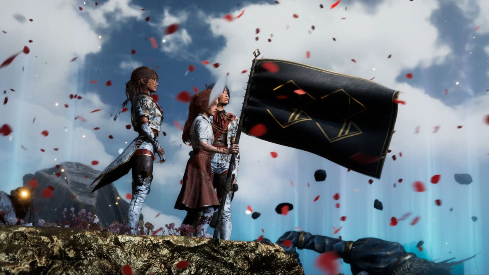
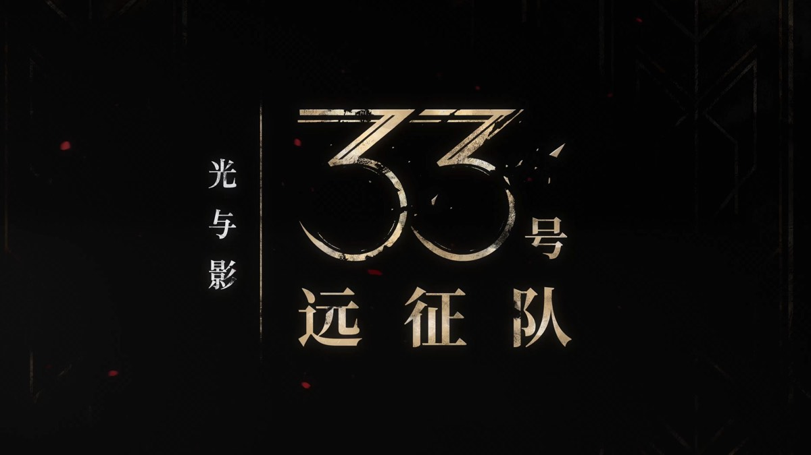

Story
一场不曾停止的消亡
世界上有一个叫做"绘母"的存在。她坐在遥远之地，每年在她的画布上写下一个数字——那个数字所对应的年龄，便从人间消失。今年她写下"33"，所有三十三岁的人在那一天陨落，如同画布上被抹去的笔迹，悄无声息。
没有人知道绘母为何这样做，也没有人真正见过她的脸。世界接受了这一切，就像接受四季更迭一样。唯一的反抗，是每年送出一支远征队，越过边境，穿过那片叫作"Continent"的画中大地，去寻找绘母，去终结这一切。
但每一支远征队，都没有回来。
今年，是第三十三次。
Gustave 今年三十四岁，刚刚从死亡线上逃脱。他的妻子 Alicia，死于两年前的那场消亡。他加入第三十三支远征队，既是为了终结绘母，也是为了逃离那个失去爱人之后变得难以承受的现实。
与他同行的，有年轻的 Maelle，活泼却藏着深重的悲伤；有科学家 Lune，以理性构建防线，以研究抵御情感；有神秘的 Sciel，一半清醒，一半游走在某种遥远的命运感之中；还有许多其他人，他们带着各自的失去，踏上了同一条路。

World
画布上的世界
《33号远征队》的世界不是写实的，而是被画出来的。大地是画布，天空有颜料的质感，光线以一种奇异的方式折射，像是油画里透出来的光。这片土地叫"Continent"——一个画中世界与现实边界模糊的地方。
游戏用"绘画"作为底层隐喻：创造是绘画，消灭是涂抹，存在是被描绘，消亡是被擦去。绘母是这一切的作者，她不是神，但她拥有神的权力——不是创世的权力，而是删除的权力。
绘母 Paintress
每年在画布上写下一个年龄，那个年龄的所有人随之消亡。她的动机成谜，她的存在本身即是规则。
年龄倒计时
每个人都清楚地知道，自己将在哪一年被消去。这让整个世界活在一种慢性的、有期限的绝望之中。
远征队
人类唯一的反抗形式。每年出发，无人归来。这已成为一种仪式，一种尊严，也是一种集体的哀悼。
Continent 大陆
边界之外的画中世界。时间与空间的规则在这里扭曲，美丽与危险并存，是绘母权力所及之地。
Timeline
远征的轨迹
游戏的故事不是一条直线，而是一个螺旋。它看上去是从 A 点走向 B 点，实际上每一步都在向内挖掘，挖向每个角色心底最难面对的那一块。
出发
第三十三支远征队在送别的沉默中离开家园，每个人都清楚这可能是最后一次离开。队伍中混杂着悲痛、愤怒、爱与释然。
越境
穿越边界进入 Continent，世界的规则开始改变。这里的一切都像是画出来的，美得失真，危险得如此优雅。
死亡开始
队伍并非铁板一块。随着旅程深入，成员陆续牺牲，每一次失去都在撕开更深的伤口——关于 Alicia，关于彼此，关于自己。
真相浮现
绘母是谁？为什么她要这样做？答案比任何人预想的都要沉重。那不是一个邪恶的意志，而是一个同样被痛苦所困的存在。
最终抉择
当 Gustave 站在绘母面前，他面对的不只是一个需要被打败的 Boss，而是一个需要被理解、被放下的问题：我们是否有权，为了活人的幸福，而终结另一个人的执念？
Duality
两个世界，一种痛苦
游戏最精妙的设定之一，是它始终让玩家意识到：Continent 这片画中世界，并非真实存在的。它是绘母画出来的，是她意志的延伸，是她将某种心愿或执念投影成的具象空间。
这意味着，远征队每经过一片风景，每遭遇一个怪物，都是在与绘母的内心世界直接交战。打倒一个 Boss，不只是战术上的胜利，更是在瓦解某种执念的具象化。
而现实世界——那个每年失去一批人的世界——是悲剧发生的地方，但也是一切意义存在的地方。画中的美丽，是用现实的痛苦换来的；现实的残酷，让画中的光影显得格外迷人。
